1 COOP and COHP
Both COOP (crystal orbital overlap population) and COHP (crystal orbital Hamilton population) are partitioning methods for analyzing the (k-dependent) wavefunction. While COOP partitions the electron number, COHP partitions the band structure energy. As a consequence, if you calculate the energy integral of a COOP curve, you get a number of electrons (like in the Mulliken scheme); if you integrate a COHP curve, you get an energy value that hints toward the bond strength.
- 使用LOBSTER[1]处理VASP的输出文件(ISYM=-1,LWAVE=.TRUE.),可以得到COOP,iCOOP,COHP,iCOHP等曲线以及DOSCAR.lobster(另一种方法投影处理的DOS).
2 ELF and charge density difference (CDD)
2.1 ELF
ELF=\frac{1}{1+(\frac{D(r)}{D_h(r)})^2} where the term \frac{D(r)}{Dh(r)} normalizes the same-spin probability by the uniform-density electron gas as reference, and thus ELF is a dimensionless localization index restricted to the range of [0,1]. A high ELF value stands for a low probability of finding a second electron with the same spin in the neighboring region of the reference electron, i.e., the reference electron is highly localized.
- ELF=1: perfect localization, convalent bonding or unpaired lone electrons
- ELF=0.5: homogeneous electron gas, metallic bonding in metal
- ELF=0: totally delocalized
- Ionic bonding: low ELF area around some atoms, and high ELF area around others
- Covalent bonding: high ELF (ELF<1) area between atoms
- metallic bonding: broad high ELF(<0.6) area delocalized
2.2 CDD
Method 1 \Delta \rho=\rho_{A@B}-\rho_{A}-\rho_{B}
Method 2 \Delta \rho=\rho_{All}-\sum\rho_i
3 Bader Charge Analysis[2]
- simple combination of VASP and baderto get ACF.dat.
4 Periodic NBO[3] and SSadNDP[4]
- Based on Periodic NBO and SSadNDP to get multi-center bonding in Crystal.
4.1 SSadNDP Tips
- To search 2c, 3c and 4c bonds with resonable ON values and ranges, such as set ranges relative to bond lengths.
- Consider the symmetry, if the the number of bonds with same ON value larger than the number of left bonds, discard them and try other bonds.
- If the bond is not localized well with atoms in (1 0 0) cell, transform them to (0 0 0) and other atoms to (-1 0 0).
- To compare them with wannier90 WFs and VBMs in VASP partial charge density.
- To use LREAL=.FALSE.
- To make number in KPONTS not prime number
- Periodic NBO could recognize 1D system, but SSAdNDP could not. To make sure the distance between images in the nonperiodic direction in the plane <0.5 nm for 1D system.
4.1.1 Visualization
- To open lattice_vec.cube in Vesta, uncheck “show sections.”
- Edit->Edit Data->Phase, import corresponding bonding cube file.
- To Delete the phase with global coordinate system (uvw)=(100) and (hkl)=(001). and set the valus “This layer” of another phase to “0.5 0.5 0.5”
- To import all phases and apply.
5 Wannier Functions
- 使用 Wannier90[5,6]可以结合VASP计算杂化泛函和GW的相关能带和DOS计算，以及求得Wannier波函数、Fermi面以及做Boltzman输运[7]等。
6 Bonding Estimation
- Linus Pauling proposed an empirical relationship which relates the percent ionic character in a bond to the electronegativity difference {\Delta}\chi, the percent of inoic character p_{inoic}=(1-e^{-({\Delta}\chi/2)^2})\times 100\%
7 轨道相互作用 (From 刘锦程)
Refs:
- “Solids and Surfaces: A Chemist’s View of Bonding in Extended Structures,” Roald Hoffman
- “电子结构分析,” bilibili 刘锦程 https://space.bilibili.com/45550176
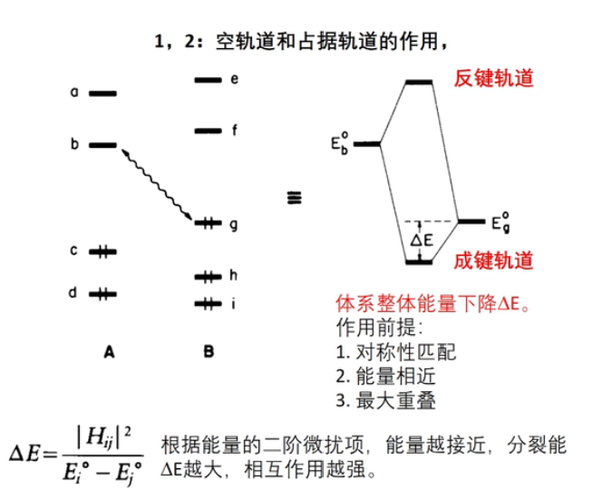
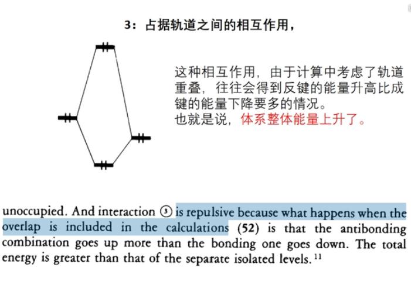
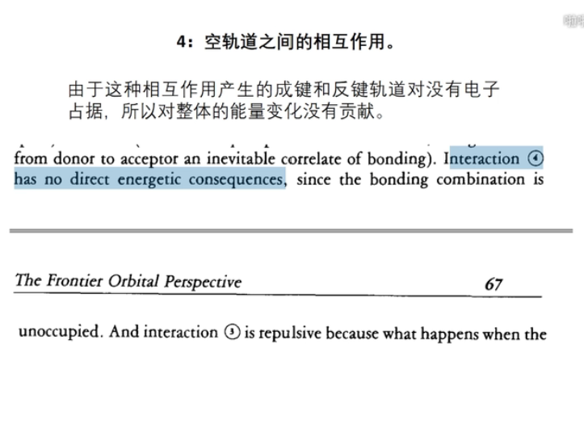
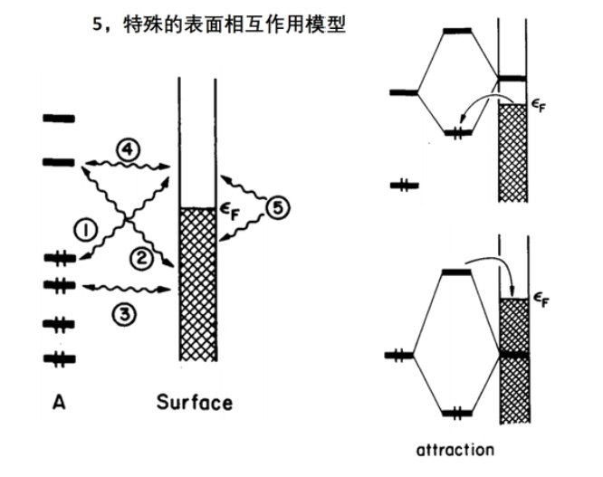
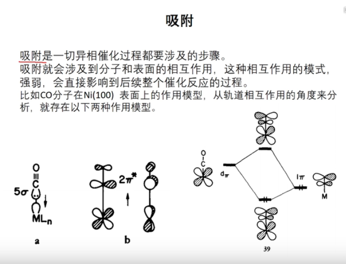
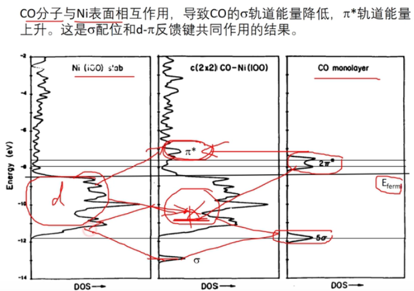
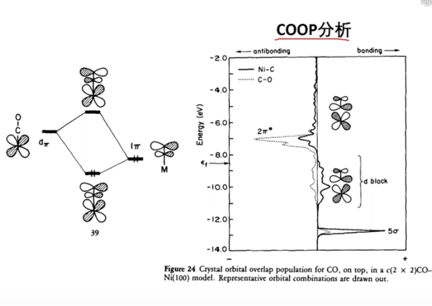
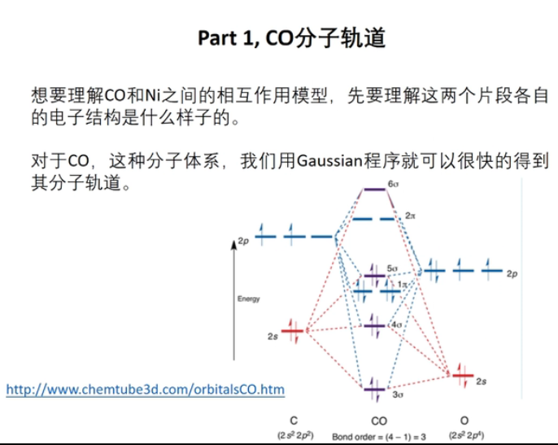
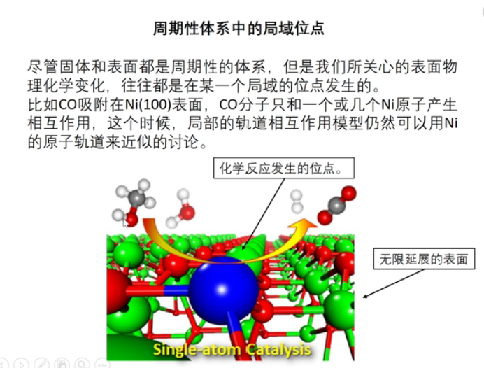
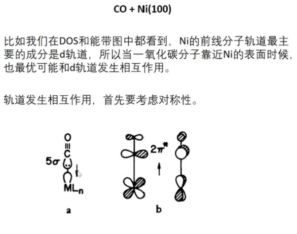
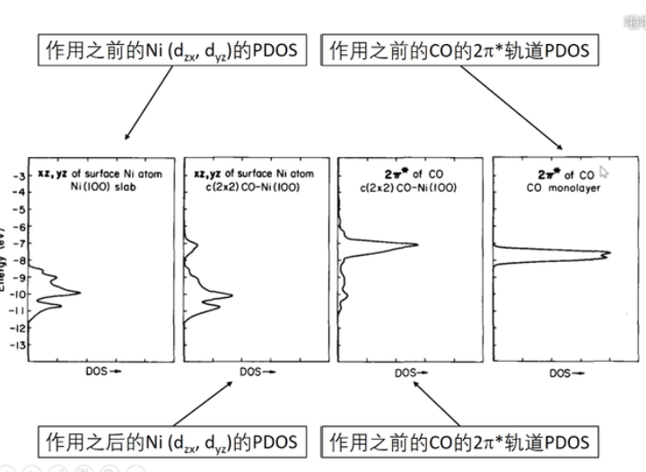
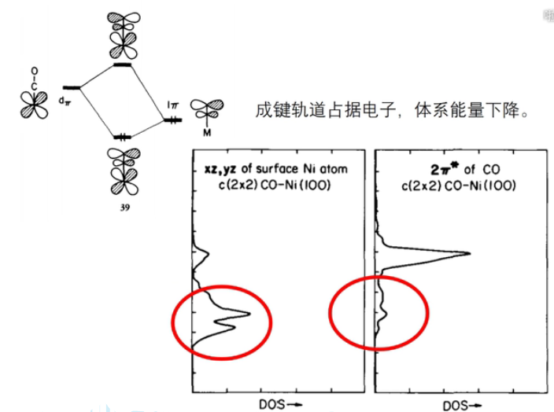
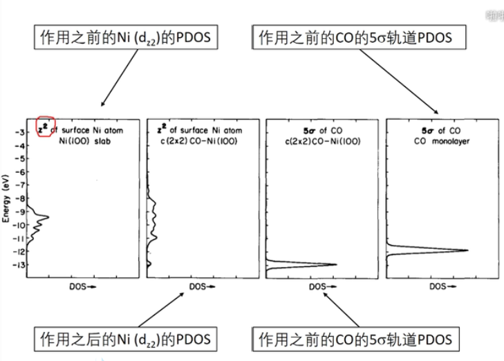
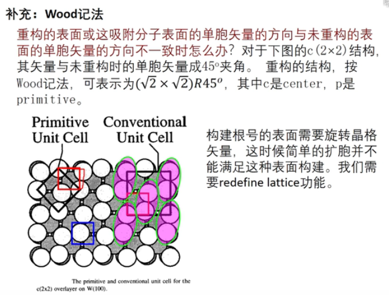
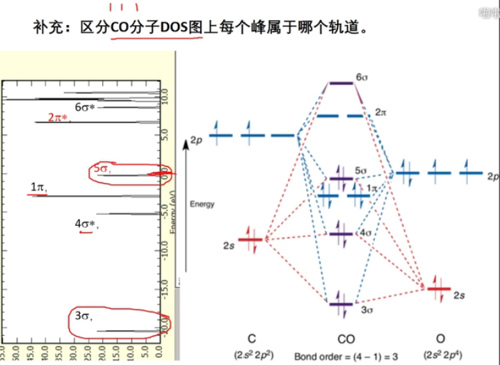
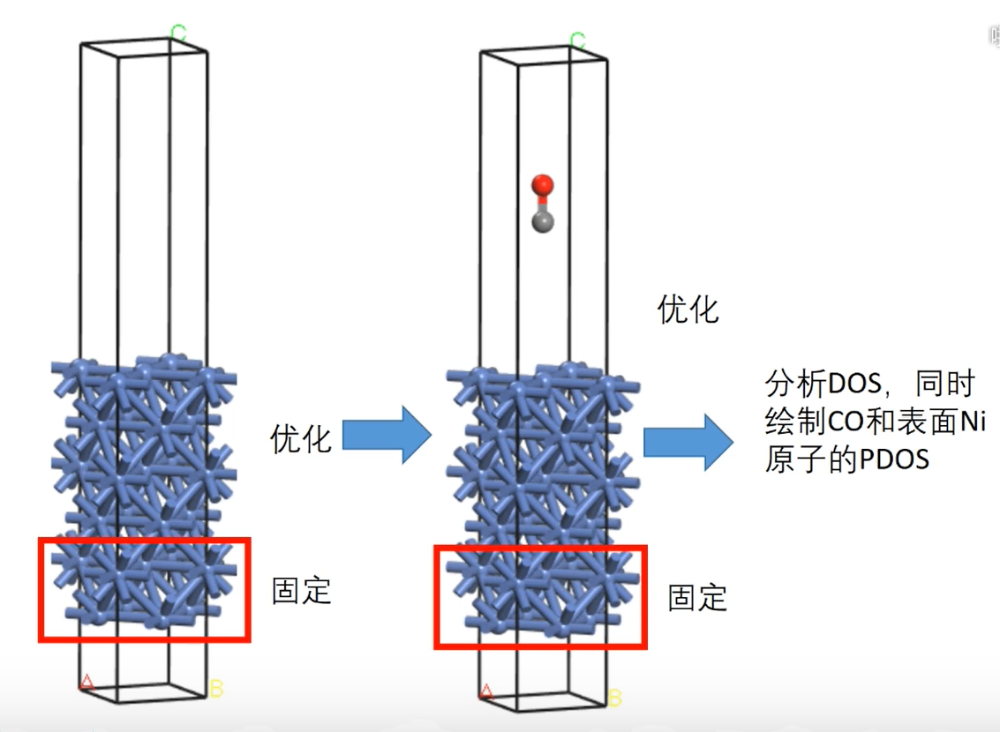